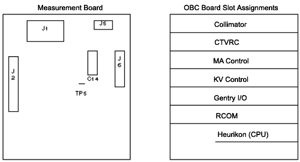

Operating Documentation
Direction 5114045-800, Rev# 10
LightSpeed 4.X Service Information (Advanced)
Operating Documentation |
| Required Persons | Preliminary Reqs | Procedure | Finalization |
|---|---|---|---|
| 1 | Timing Not Applicable | 30 mins | Timing Not Applicable |
Procedure Effectivity:
| Assembly: | HIGH VOLTAGE |
| Subassembly: | X-Ray Generation |
| Purpose: | mA Meter Verification (HHS) |
| Last Revised: | December 1996 |
| Item | Qty | Effectivity | Part# | Manufacturer | |
|---|---|---|---|---|---|
| 6-feet test lead | 1 | - | 46-297887P1 (black) | - | |
| - | - | - | 46-297887P2 (red) | - | |
| DVM | 1 | - | - | - | |
Inside the Gantry, do the following:
Switch OFF the 550v enable.
Switch OFF the axial drive.
Rotate the Anode tank to the 2 o’clock position.
Pin the Gantry.
Display Generator Characterization Menu.
Select [Read Metering] .
| NOTE: | On the display, type/enter a time delay in seconds, to provide enough time for you to walk from the console to the DVM, and record the reading. The test will not begin until this time delay expires. Once it begins, the test enables the meter circuit for only four seconds. |
Use a DVM as an mA meter; connect it to the hardware on the anode side:
Connect the black lead to TP8 (ACAL1) on the mA board.
Connect the red lead to TP11 (ACAL2) on the mA board.
Locate the Anode HV Tank Measurement board (See Illustration 1). If TP5 has a wire from the harness, you don’t need the following test lead. If TP5 does NOT have a wire from the harness, install a test lead as follows:
Use a jumper with a 68 ohm, 5 watt, resistor in series.
Connect one end to TP11 (ACAL 2) on the mA board.
Connect the other end to TP5 on the Anode Tank Measurement board (See Illustration 1).
Illustration 1: Anode Tank Measurement Board and OBC Card Cage

On the Display, select the [Accept] softkey.
Record the displayed and measured Anode mA values on FORM 4879 (Data Record) for "Circuit OFF" and "Circuit ON".
| NOTE: | If your system has the test wire to TP5 included in the harness, the Cathode side should read approximately 19mA during “Circuit On”. |
Disconnect the test equipment from the Anode side, if used.
| NOTE: | When you exit Generator Characterization, this test may generate “Kv board tube spit counter = x” error messages. |
Use a DVM as an mA meter:
Connect the black lead to TP9 (CCAL1) on the mA board.
Connect the red lead to TP14 (CCAL2) on the mA board.
Locate the Cathode HV Tank Measurement board ( Illustration 1). If TP5 has a wire from the harness, you don’t need the following test lead. If TP5 does NOT have a wire from the harness, install a test lead as follows:
Use a jumper with a 68 ohm, 5 watt, resistor in series.
Connect one end to TP14 (CCAL 2) on the mA board.
Connect the other end to TP5 on the Cathode Tank Measurement board ( Illustration 1).
On the Display, select the [Accept] softkey.
Record the displayed and measured Anode mA values on FORM 4879 (Data Record) for "Circuit OFF" and "Circuit ON".
| NOTE: | If your system has the test wire to TP5 included in the harness, the Anode side should read approximately 20mA during “Circuit On”. |
Disconnect the test equipment from the Cathode side if used.
| NOTE: | When you exit Generator Characterization, this test may generate “Kv board tube spit counter = x” error messages. |
No finalization required.